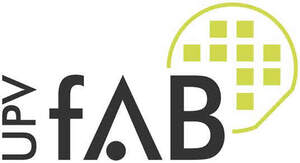

Trade Mark Journal No.2026/012 20 March 2026
UK00004312519 18 December 2025 (9,41,42)

- Class 9
- Computer software and firmware; application development tool programs for personal handheld computers; computer programs for accessing, browsing and searching online databases; computer application software for mobile phones for web browsing, retail services, online shopping, e-commerce services, audio streaming and/or video streaming; gaming software; computer gaming software; interactive entertainment computer software for video games; virtual reality games software; simulation software; headsets for virtual reality games; magnetic data carriers; computer software downloadable from the internet; data recordings including audio, video, still and moving images and text; downloadable electronic publications; mouse mats; electronic instructional and teaching apparatus and instruments; pre-recorded vinyl records, audio tapes, audio video tapes, audio video cassettes, audio video discs; CD-ROMs; DVD-ROMs; films; photographic films; cameras; glasses and sunglasses; sound and video recording and reproducing apparatus and instruments; parts and fittings for all the aforesaid goods.
- Class 41
- Education and entertainment services provided by a university; provision of education; conferral of degrees and diploma certificates; educational consultation and examination services; university and teaching services; vocational education; management training; sports and physical education instructions services; publication of books, leaflets and instructional text; library services; orchestral music, concert, disco and live performances; museum and art gallery services; arranging and conducting of exhibitions; organisation of educational seminars, conferences and conventions; provision of sporting and recreational services and facilities; publication and distribution of printed media and recordings; professional consultancy services relating to education.
- Class 42
- Research and development services relating to science, engineering, computer applications, languages and the Arts; engineering services; scientific testing; professional consultancy services relating to research, law, science, engineering, medical science and food science; computer software and hardware design and rental; computer programming services; information provided on-line from a computer database or the Internet.
UNIVERSITAT POLITÈCNICA DE VALÈNCIA
Representative: Iberpatent Patents & Trademarks